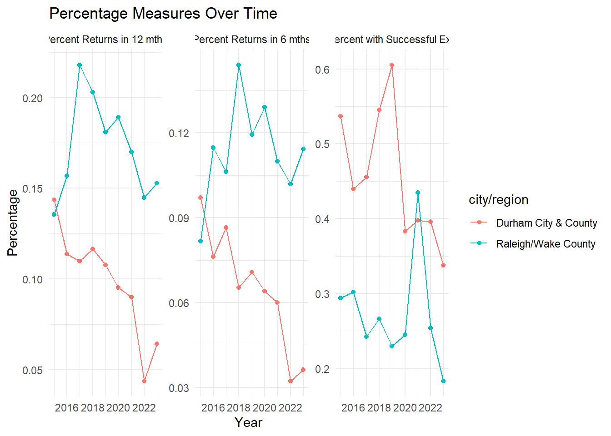
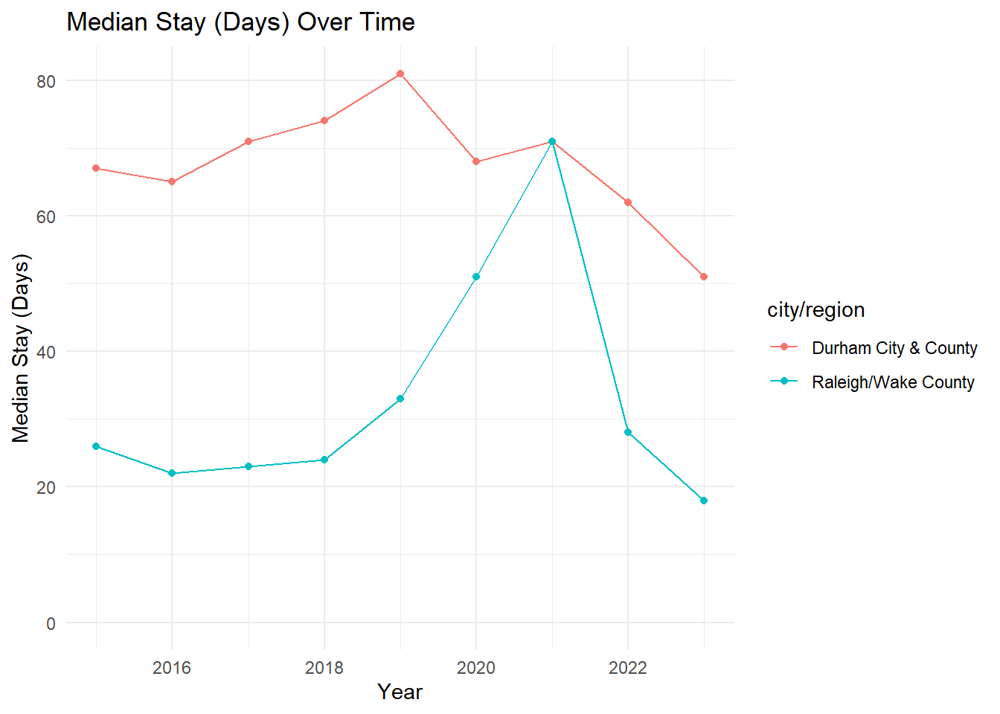
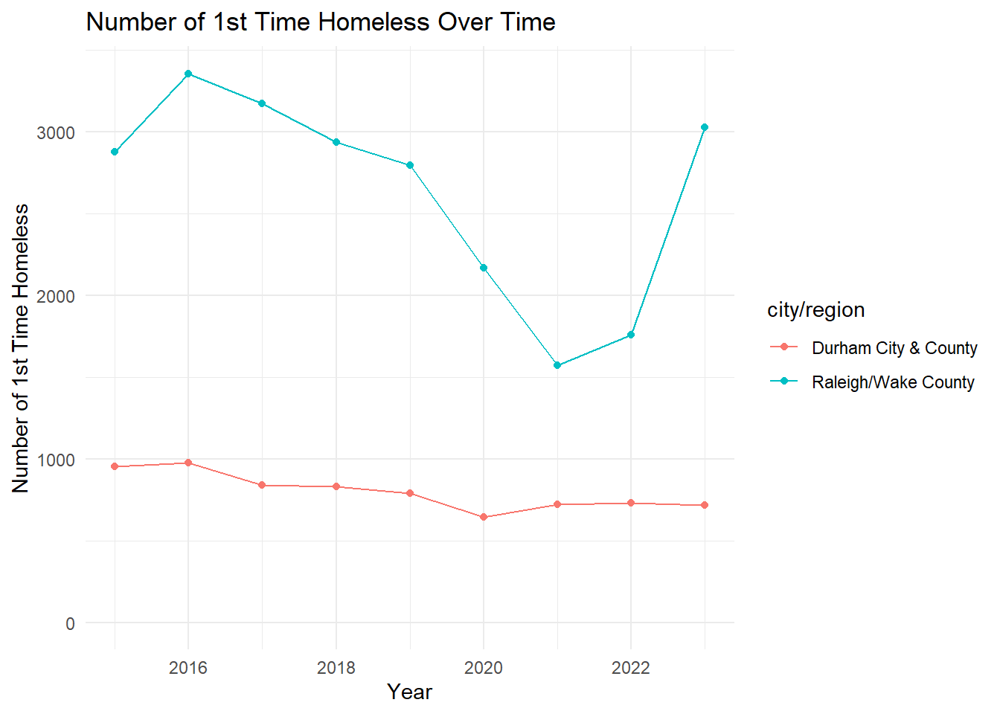

Our case study focuses on Raleigh's recent Missing Middle policy reform (enacted in 2021) – an initiative that relaxed zoning restrictions to permit duplexes, townhomes, and small-scale apartment developments – in an effort to boost affordable housing. We use this policy change as a lens to address the broader question of whether relaxing housing restrictions can improve housing affordability. Our underlying hypothesis is that easing these restrictions will enhance affordability by increasing the housing supply and, consequently, reducing homelessness and other negative shelter system outcomes.
The dataset leveraged in this analysis originates from a mandate established by the 2009 McKinney-Vento Homeless Assistance Act, which requires local jurisdictions to report detailed information on their shelter systems to the U.S. Department of Housing and Urban Development (HUD). Our study utilizes this dataset spanning 2015–2023, which includes key performance indicators such as median shelter stay, return rates, and the number of first-time homeless individuals.
To rigorously evaluate this hypothesis, we employ two complementary methods. First, we created a series of visualizations comparing key response variables across five outcomes – Median Stay (Days), Percent Returns in 6 months, Percent Returns in 12 months, Number of 1st Time Homeless, and Percent with Successful Exit – between Raleigh and Durham. Second, we conducted a difference-in-differences analysis using 2021 as the cutoff year, comparing not only Raleigh and Durham but also contrasting Raleigh with an aggregate measure derived from averaging each response variable across all North Carolina municipalities. Despite these methodological approaches, our empirical evidence did not support the hypothesis that the relaxation of zoning restrictions improved affordability. In fact, the DiD estimates indicated no significant improvements in homelessness-related outcomes for Raleigh relative to Durham or the broader NC benchmark, suggesting that policy changes alone may not yield the anticipated benefits.
Warning: package 'dplyr' was built under R version 4.3.3
Attaching package: 'dplyr'
The following objects are masked from 'package:stats':
filter, lag
The following objects are masked from 'package:base':
intersect, setdiff, setequal, union
You can add options to executable code like this
library(dplyr)library(tidyr)library(ggplot2)
Warning: package 'ggplot2' was built under R version 4.3.3
# Filter for Raleigh/Wake Countyraleigh_data <- combined_data %>%filter(`city/region`=="Raleigh/Wake County")# -------------------------------------------# 1. Plot for Percentage Measures (combined)# -------------------------------------------# Define the percentage variablespercent_vars <-c("Percent with Successful Exit", "Percent Returns in 6 mths", "Percent Returns in 12 mths")# Pivot these columns from wide to long formatraleigh_percent <- raleigh_data %>%select(year, all_of(percent_vars)) %>%pivot_longer(cols =all_of(percent_vars),names_to ="variable",values_to ="value")# Create the percentage plotp_percent <-ggplot(raleigh_percent, aes(x = year, y = value, color = variable, group = variable)) +geom_line() +geom_point() +labs(title ="Percentage Measures Over Time in Raleigh/Wake County",x ="Year",y ="Percentage" ) +theme_minimal()# -------------------------------------------# 2. Plot for Median Stay (Days)# -------------------------------------------p_median <-ggplot(raleigh_data, aes(x = year, y =`Median Stay (Days)`)) +geom_line(color ="blue") +geom_point(color ="blue") +labs(title ="Median Stay (Days) Over Time in Raleigh/Wake County",x ="Year",y ="Median Stay (Days)" ) +theme_minimal() +scale_y_continuous(limits =c(0, NA))# -------------------------------------------# 3. Plot for Number of 1st Time Homeless# -------------------------------------------p_first_time <-ggplot(raleigh_data, aes(x = year, y =`Number of 1st Time Homeless`)) +geom_line(color ="darkgreen") +geom_point(color ="darkgreen") +labs(title ="Number of 1st Time Homeless Over Time in Raleigh/Wake County",x ="Year",y ="Number of 1st Time Homeless" ) +theme_minimal() +scale_y_continuous(limits =c(0, NA))# Print the plots (each will appear in its own plot window)#print(p_percent)#print(p_median)#print(p_first_time)
Durham vs Raleigh
library(dplyr)library(tidyr)library(ggplot2)library(stringr)# Filter for Raleigh/Wake County and Durham Countycounties_data <- combined_data %>%filter(`city/region`%in%c("Raleigh/Wake County", "Durham City & County"))# -------------------------------------------# 1. Combined Plot for Percentage Measures# -------------------------------------------# Define the percentage variable names (using updated header names)percent_vars <-c("Percent with Successful Exit", "Percent Returns in 6 mths", "Percent Returns in 12 mths")# Pivot these percentage columns into long format and include the county identifiercounties_percent <- counties_data %>%select(year, `city/region`, all_of(percent_vars)) %>%pivot_longer(cols =all_of(percent_vars),names_to ="variable",values_to ="value")# Create a faceted plot so that each percentage variable appears in its own panelp_percent <-ggplot(counties_percent, aes(x = year, y = value, color =`city/region`, group =interaction(`city/region`, variable))) +geom_line() +geom_point() +facet_wrap(~ variable, scales ="free_y") +labs(title ="Percentage Measures Over Time",x ="Year",y ="Percentage" ) +theme_minimal()# -------------------------------------------# 2. Plot for Median Stay (Days)# -------------------------------------------p_median <-ggplot(counties_data, aes(x = year, y =`Median Stay (Days)`, color =`city/region`, group =`city/region`)) +geom_line() +geom_point() +labs(title ="Median Stay (Days) Over Time",x ="Year",y ="Median Stay (Days)" ) +theme_minimal() +scale_y_continuous(limits =c(0, NA))# -------------------------------------------# 3. Plot for Number of 1st Time Homeless# -------------------------------------------p_first_time <-ggplot(counties_data, aes(x = year, y =`Number of 1st Time Homeless`, color =`city/region`, group =`city/region`)) +geom_line() +geom_point() +labs(title ="Number of 1st Time Homeless Over Time",x ="Year",y ="Number of 1st Time Homeless" ) +theme_minimal() +scale_y_continuous(limits =c(0, NA))# Print the plotsprint(p_percent)

print(p_median)

print(p_first_time)

Diff-in-Diff for Raleigh vs Average of other NC municipalities
# Load necessary packageslibrary(dplyr)library(broom)library(purrr)# Define the policy implementation year (adjust as needed)policy_year <-2021# In your data, all observations are from NC.# Create the treatment and post indicators.nc_data <- combined_data %>%mutate(treatment =if_else(`city/region`=="Raleigh/Wake County", 1, 0),post =if_else(year >= policy_year, 1, 0) )# Define a vector of outcome variable names for which you want to run DiD.outcome_vars <-c("Median Stay (Days)","Percent Returns in 6 mths","Percent Returns in 12 mths","Number of 1st Time Homeless","Percent with Successful Exit")# Loop over each outcome variable, run a DiD regression, and store the tidy results.results_list <-lapply(outcome_vars, function(var) {# Construct the model formula. We use backticks in case the column name contains spaces. formula <-as.formula(paste0("`", var, "` ~ treatment * post"))# Run the regression model <-lm(formula, data = nc_data)# Tidy the model output and add a column indicating the outcome variabletidy(model) %>%mutate(outcome = var)})# Combine all the results into one data frame.diff_in_diff_results <-bind_rows(results_list)# Print the combined resultsprint(diff_in_diff_results)
# A tibble: 20 × 6
term estimate std.error statistic p.value outcome
<chr> <dbl> <dbl> <dbl> <dbl> <chr>
1 (Intercept) 62.3 5.59 11.2 1.76e-19 Median Stay (Days)
2 treatment -32.5 19.4 -1.68 9.60e- 2 Median Stay (Days)
3 post 6.20 9.68 0.640 5.23e- 1 Median Stay (Days)
4 treatment:post 2.97 33.5 0.0886 9.30e- 1 Median Stay (Days)
5 (Intercept) 0.0903 0.00445 20.3 6.45e-38 Percent Returns in 6 …
6 treatment 0.0255 0.0154 1.66 1.01e- 1 Percent Returns in 6 …
7 post -0.0241 0.00772 -3.13 2.29e- 3 Percent Returns in 6 …
8 treatment:post 0.0170 0.0267 0.636 5.26e- 1 Percent Returns in 6 …
9 (Intercept) 0.135 0.00607 22.3 2.24e-41 Percent Returns in 12…
10 treatment 0.0453 0.0210 2.15 3.35e- 2 Percent Returns in 12…
11 post -0.0401 0.0105 -3.81 2.32e- 4 Percent Returns in 12…
12 treatment:post 0.0155 0.0364 0.424 6.72e- 1 Percent Returns in 12…
13 (Intercept) 1398. 188. 7.44 3.04e-11 Number of 1st Time Ho…
14 treatment 1485. 651. 2.28 2.46e- 2 Number of 1st Time Ho…
15 post -95.6 326. -0.294 7.70e- 1 Number of 1st Time Ho…
16 treatment:post -670. 1128. -0.594 5.54e- 1 Number of 1st Time Ho…
17 (Intercept) 0.465 0.0142 32.7 1.39e-56 Percent with Successf…
18 treatment -0.202 0.0492 -4.10 8.11e- 5 Percent with Successf…
19 post -0.0815 0.0246 -3.31 1.27e- 3 Percent with Successf…
20 treatment:post 0.109 0.0852 1.28 2.04e- 1 Percent with Successf…
Diff-in-Diff for Durham vs Raleigh
# Load necessary packageslibrary(dplyr)library(broom)library(purrr)# Define the policy implementation year (adjust as needed)policy_year <-2018# Filter data to only include Durham and Raleigh observationsrd_data <- combined_data %>%filter(`city/region`%in%c("Raleigh/Wake County", "Durham City & County")) %>%mutate(treatment =if_else(`city/region`=="Raleigh/Wake County", 1, 0),post =if_else(year >= policy_year, 1, 0) )# Define a vector of outcome variable names for which you want to run DiD.outcome_vars <-c("Median Stay (Days)","Percent Returns in 6 mths","Percent Returns in 12 mths","Number of 1st Time Homeless","Percent with Successful Exit")# Loop over each outcome variable, run a DiD regression, and store the tidy results.results_list <-lapply(outcome_vars, function(var) {# Construct the model formula using backticks for variable names with spaces. formula <-as.formula(paste0("`", var, "` ~ treatment * post"))# Run the regression model model <-lm(formula, data = rd_data)# Tidy the model output and add a column indicating the outcome variabletidy(model) %>%mutate(outcome = var)})# Combine all the results into one data frame.diff_in_diff_results <-bind_rows(results_list)# Print the combined resultsprint(diff_in_diff_results)
# A tibble: 20 × 6
term estimate std.error statistic p.value outcome
<chr> <dbl> <dbl> <dbl> <dbl> <chr>
1 (Intercept) 67.7 7.78 8.69 0.000000513 Median Stay (Days)
2 treatment -44.0 11.0 -4.00 0.00132 Median Stay (Days)
3 post 0.167 9.53 0.0175 0.986 Median Stay (Days)
4 treatment:post 13.7 13.5 1.01 0.328 Median Stay (Days)
5 (Intercept) 0.0866 0.00881 9.83 0.000000115 Percent Returns in …
6 treatment 0.0143 0.0125 1.14 0.272 Percent Returns in …
7 post -0.0319 0.0108 -2.95 0.0104 Percent Returns in …
8 treatment:post 0.0508 0.0153 3.33 0.00498 Percent Returns in …
9 (Intercept) 0.122 0.0158 7.73 0.00000205 Percent Returns in …
10 treatment 0.0478 0.0224 2.13 0.0512 Percent Returns in …
11 post -0.0361 0.0194 -1.86 0.0838 Percent Returns in …
12 treatment:post 0.0394 0.0274 1.44 0.172 Percent Returns in …
13 (Intercept) 922 225. 4.09 0.00110 Number of 1st Time …
14 treatment 2212. 319. 6.94 0.00000687 Number of 1st Time …
15 post -185. 276. -0.670 0.514 Number of 1st Time …
16 treatment:post -574. 390. -1.47 0.163 Number of 1st Time …
17 (Intercept) 0.477 0.0489 9.76 0.000000126 Percent with Succes…
18 treatment -0.198 0.0691 -2.86 0.0126 Percent with Succes…
19 post -0.0328 0.0599 -0.548 0.592 Percent with Succes…
20 treatment:post 0.0222 0.0847 0.262 0.797 Percent with Succes…